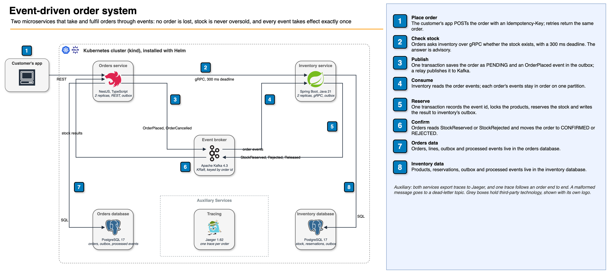
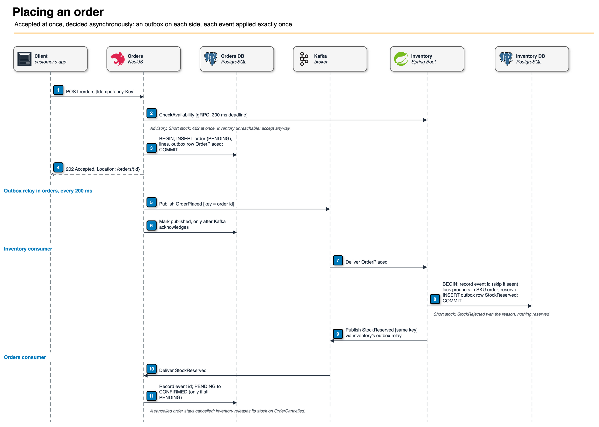
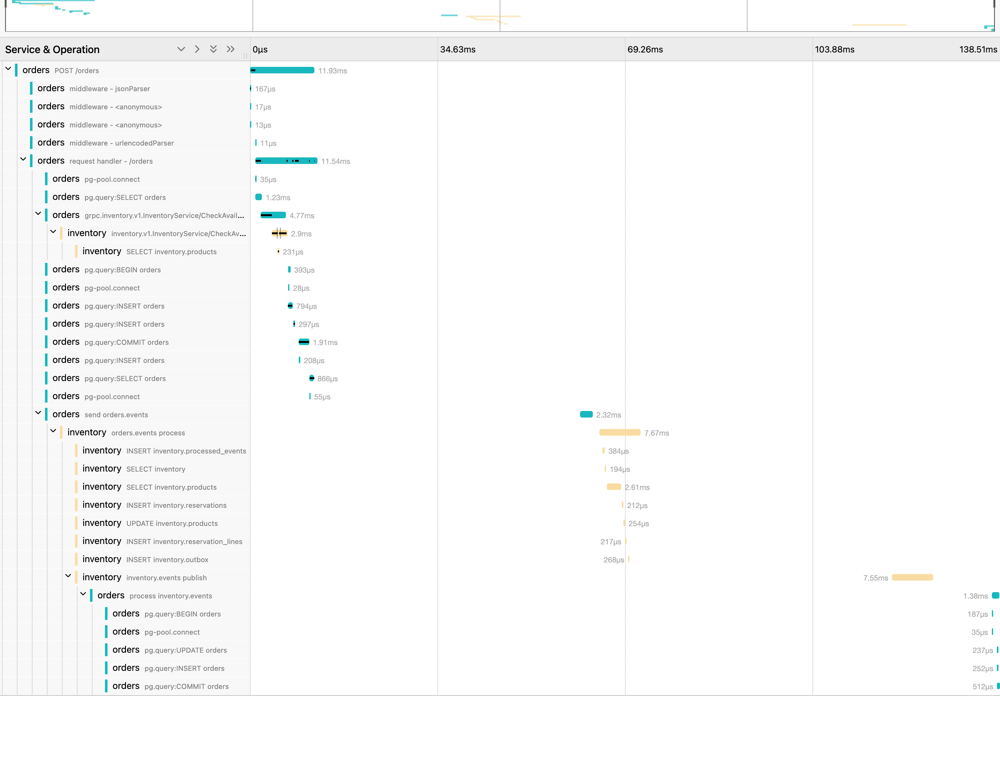

Walkthrough in five parts: what each piece does, why it was built that way, and how to talk about it in an interview.
Repo: github.com/gumagatsby/event-driven-orders

| Piece | Technology | Job |
|---|---|---|
| Orders service | TypeScript, NestJS, node-postgres, kafkajs, grpc-js | REST API: takes orders idempotently, tracks status, publishes events, consumes stock results |
| Inventory service | Java 21, Spring Boot 4, Spring Kafka, Spring gRPC, Flyway | Answers stock queries over gRPC; reserves and releases stock from events |
| Event broker | Apache Kafka 4.3 (KRaft, no ZooKeeper) | orders.events, inventory.events, a dead-letter topic for each |
| Databases | PostgreSQL 17, one per service | Each service owns its data; a network policy enforces it |
| Platform | Kubernetes (kind, three nodes), Helm | One generic chart for both services, one for the infrastructure |
| Observability | OpenTelemetry, Jaeger, Prometheus metrics endpoints | One trace per order across both services and Kafka |

Orders asks inventory over gRPC whether the stock exists, with a 300 ms deadline, so an impossible order is refused at once with 422. That check is only advice. The decision is the reservation inventory makes when it consumes the OrderPlaced event. If inventory is down, the deadline expires and the order is accepted anyway; it is decided when inventory comes back.
Neither service writes to Kafka from a request. It saves the event in an outbox table in the same transaction as the change, and a relay publishes it, marking it sent only after Kafka acknowledges. A crash cannot leave an order without its event, or an event for an order that was rolled back, and Kafka can be down without losing anything.
Kafka can deliver a message twice. Each consumer records the event id in the same transaction as the event's effect and skips ids it has seen, so stock moves once however many times the event arrives.
Both topics are keyed by order id, so every event about one order is on one partition and is processed in order: placed before cancelled. Only one relay replica publishes at a time (a PostgreSQL advisory lock), which keeps that order on the way in.
SELECT ... FOR UPDATE, always sorted by SKU, so two orders for the same products cannot deadlock. CHECK (reserved <= on_hand) backs it up.POST /orders requires an Idempotency-Key, unique in the database. A retry returns the same order; the same key for a different order gets 409.PENDING.publishNotReadyAddresses: true fixed it.| Check on the cluster | Result |
|---|---|
| 40 orders race for 10 monitors | exactly 10 confirmed, 30 rejected, stock left 0 |
| Inventory scaled to zero, 20 orders placed | 20 of 20 accepted; all confirmed 15 s after it returned |
| Kafka scaled to zero, 20 orders placed | 20 of 20 accepted; all confirmed 34 s after it returned |
| 10 concurrent retries with one key | 1 order |
| Malformed message | dead-lettered; the next order still confirmed |
| Accepted to confirmed, 100 orders | p50 232 ms, p95 360 ms |

One order in Jaeger, 35 spans: the request (12 ms, including the gRPC check), the outbox relay sending to Kafka, inventory reserving stock, inventory's relay replying, and orders confirming, 138 ms end to end. The trace survives the outbox because each outbox row stores the trace context and the relay restores it.
"Why not just call inventory synchronously to reserve stock?"
Then every order depends on inventory being up at that moment, and a timeout leaves you not knowing whether stock was reserved. With events, the order is safely recorded first and the reservation happens when inventory can do it. I kept a synchronous call only for the advisory check, with a deadline, so it can never block an order.
"What is the transactional outbox and why do you need it?"
You cannot commit to a database and publish to Kafka atomically. If you commit and then publish, a crash in between loses the event; if you publish first, a rollback leaves a false event. Writing the event to a table in the same transaction, and publishing from that table, removes the gap.
"Kafka can deliver twice. How is that safe?"
Each consumer records the event id in the same transaction as the effect, and skips ids it has seen. Delivery is at least once; the effect is exactly once. A test delivers the same event twice and checks stock moves once.
"How do you keep events for one order in order?"
Key by order id, so they share a partition, and have one consumer thread per partition. On the producing side, only one relay replica publishes at a time.
"What would you change for production?"
Three Kafka brokers with replication factor 3 or a managed service, a schema registry for the events, mutual TLS between services, alerts on consumer lag and outbox depth, and change data capture instead of polling to cut the latency.
| Check | Result |
|---|---|
| Java tests (Testcontainers: real Kafka 4.3.1 and PostgreSQL 17) | 12 of 12 pass, including the 40-way race and the dead-letter test |
| TypeScript tests (real PostgreSQL) | 20 of 20 pass, including 20 identical requests racing |
| End to end on a fresh three-node kind cluster | 13 of 13 checks pass, including both outage drills |
| Network policy probes | blocked and allowed paths as designed |
| Helm lint | both charts pass |
| GitHub Actions CI | all 4 jobs green; 13 of 13 end-to-end checks on a fresh cluster in CI |